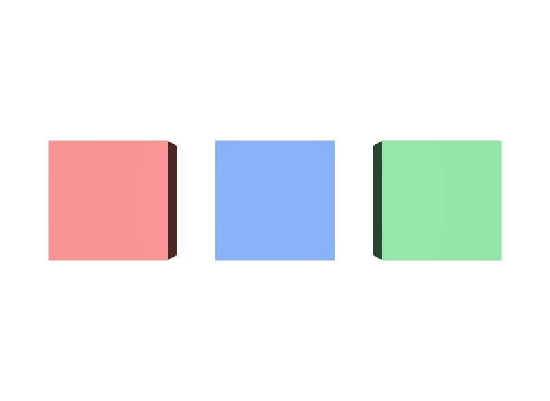

型名をSpecifierだと思う
def Cube "First"のCubeはSpecifierではなく型名です。Specifierは先頭のdefです。
STEP 40 · SPECIFIER
Primを「ここに存在する」と宣言する、いちばん基本のSpecifierです
今日これだけ
公式情報に基づく説明
USDAでPrimを書くとき、先頭に置く語をSpecifierと呼びます。Specifierはdef、over、classの3種類です。defは「このPrimを定義する」という意味で、Compositionの結果としてdefが含まれていれば、そのPrimはStage上でdefinedになります。定義されていないPrimは、Stageを走査する既定の動作から外れ、描画もされません。
USDA
#usda 1.0
(
defaultPrim = "World"
metersPerUnit = 1
upAxis = "Y"
)
def Xform "World"
{
def Cube "First"
{
double size = 1
color3f[] primvars:displayColor = [(0.85, 0.2, 0.2)]
double3 xformOp:translate = (-1.4, 0, 0)
uniform token[] xformOpOrder = ["xformOp:translate"]
}
def Cube "Second"
{
double size = 1
color3f[] primvars:displayColor = [(0.15, 0.35, 0.85)]
double3 xformOp:translate = (0, 0, 0)
uniform token[] xformOpOrder = ["xformOp:translate"]
}
def Cube "Third"
{
double size = 1
color3f[] primvars:displayColor = [(0.2, 0.7, 0.3)]
double3 xformOp:translate = (1.4, 0, 0)
uniform token[] xformOpOrder = ["xformOp:translate"]
}
}def Cube "First"は、左から順に「Specifier」「型名」「Prim名」です。型名は省略できますが、書いておくとSchemaが決まり、そのSchemaが持つAttributeを使えます。Prim名は引用符で囲み、続く波括弧の中にそのPrimの中身を書きます。
結果

defなので、3つともStage上に存在し、描画されます。examples/lesson-27a/specifier-def.usda / Apple USD Tools 0.25.2 のusdrecord（Hydra Storm・Metal）/ macOS 26.5.2・Apple M4usdtreeで構造を確認すると、Specifierと型名が角括弧の中に表示されます。
/
`--World [def Xform]
|--First [def Cube]
|--Second [def Cube]
|--Third [def Cube]
`--ShotCam [def Camera]Diagram
Python
from pxr import Sdf, Usd, UsdGeom
stage = Usd.Stage.CreateNew("specifier.usda")
UsdGeom.Xform.Define(stage, "/World")
cube = UsdGeom.Cube.Define(stage, "/World/First")
prim = cube.GetPrim()
print(prim.GetSpecifier()) # Sdf.SpecifierDef
print(prim.IsDefined()) # True
# 型名を指定しないでdefだけ作る
plain = stage.DefinePrim("/World/Untyped")
print(plain.GetTypeName()) # 空文字列
print(plain.IsDefined()) # True
stage.Save()SchemaのDefine（UsdGeom.Cube.Defineなど）と、StageのDefinePrimは、どちらもdefのPrimを作ります。前者は型名まで設定し、後者は型名なし、または第2引数で型名を渡します。作られたPrimのGetSpecifier()はSdf.SpecifierDefを返します。
USDA → Python mapping
USDA
def Cube "First"↓Python
UsdGeom.Cube.Define(stage, "/World/First")USDA
def "Untyped"↓Python
stage.DefinePrim("/World/Untyped")USDA
（Specifierの確認）↓Python
prim.GetSpecifier()Beginner notes
よくある間違い
def Cube "First"のCubeはSpecifierではなく型名です。Specifierは先頭のdefです。
def "Group"のように型名を省略できます。ただし型名がないと、そのSchemaのAttributeは使えません。整理用のPrimにはScopeを使うのが一般的です。
Prim名は必ず引用符で囲みます。def Cube Firstとは書けません。
Glossary
def・over・classの3種類。IsDefined()がTrueを返す。Official references
確認日: